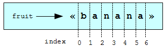

К этому момент мы уже встречали пять типов данных: int, float, bool, NoneType и str. Тип str — строка — качественно отличается от четырех других тем, что состоит из меньших элементов — символов.
Типы, включающие меньшие элементы, называются составными типами данных. В разных ситуациях можно либо обращаться с составным типом данных как с чем-то цельным, либо работать с его отдельными частями. Эта двоякость полезна.
Оператор [] выбирает единственный символ из строки:
>>> fruit = "banana"
>>> letter = fruit[1]
>>> print letter
Выражение fruit[1] выбирает символ номер 1 из строки fruit. Результат присваивается переменной letter. Отобразив letter, вы, вероятно, удивитесь:
a
Ведь первая буква в строке "banana" не a! Но программисты часто ведут счет, начиная с 0. Буква номер 0 в строке "banana" — буква b. Буква номер 1 — a, номер 2 — n, и так далее.
Если вам нужна буква номер 0, просто поместите 0, или любое выражение, дающее 0, в квадратные скобки:
>>> letter = fruit[0]
>>> print letter
b
Выражение в скобках называется индекс. Индекс указывает на элемент упорядоченного набора, в данном случае, набора символов строки. Индекс может быть произвольным целочисленным выражением.
Функция len (англ.: длина) возвращает количество символов в строке:
>>> fruit = "banana"
>>> len(fruit)
6
Возможно, для получения последнего символа в строке вы захотите сделать так:
length = len(fruit)
last = fruit[length] # Ошибка!
Это не работает! Вы получите ошибку выполнения IndexError: string index out of range. Причина в том, что в строке "banana" нет символа с индексом 6. Так как мы начинаем счет с 0, шесть символов пронумерованы от 0 до 5. Для того, чтобы получить последний символ, нужно из length вычесть 1:
length = len(fruit)
last = fruit[length-1]
Кроме того, можно использовать отрицательные индексы, которые позволяют вести счет от конца строки. Выражение fruit[-1] дает последний символ строки, fruit[-2] дает второй символ от конца строки, и так далее.
Часто программе требуется обрабатывать строку по одному символу за раз. Начав с начала строки, программа выбирает очередной символ и что-то с ним делает, и так до тех пор, пока строка не закончится. Такой прием обработки называется обходом. Вот как можно запрограммировать обход с помощью предложения while:
index = 0
while index < len(fruit):
letter = fruit[index]
print letter
index += 1
Этот цикл обходит строку и выводит каждую букву в отдельной строке. Условие цикла здесь index < len(fruit), так что, когда index становится равным длине строки, условие становится ложным и тело цикла больше не выполняется. Последний обработанный символ имеет индекс len(fruit)-1, и является последним символом в строке.
Обход элементов последовательности настолько часто используется, что Python предлагает для этого другой, более простой синтаксис — цикл for:
for char in fruit:
print char
В каждой итерации переменной char присваивается очередной символ строки. Цикл продолжается до тех пор, пока строка не закончится.
Следующий пример показывает, как с помощью конкатенации и цикла for сгенерировать последовательность в алфавитном порядке. Например, Роберт МакКлоски в своей книге дал такие имена утятам: Jack, Kack, Lack, Mack, Nack, Ouack, Pack и Quack. Следующий цикл выводит имена утят в алфавитном порядке:
prefixes = "JKLMNOPQ"
suffix = "ack"
for letter in prefixes:
print letter + suffix
Эта программа выводит:
Jack
Kack
Lack
Mack
Nack
Oack
Pack
Qack
Конечно, это не совсем то, что нужно, поскольку Ouack и Quack написаны неправильно. Вам предстоит исправить это в одном из упражнений к этой главе.
Подстроку строки будем называть срезом. Получение среза строки похоже на получение одного символа:
>>> s = "Peter, Paul, and Mary"
>>> print s[0:5]
Peter
>>> print s[7:11]
Paul
>>> print s[17:21]
Mary
Оператор [n:m] возвращает часть строки, начиная с символа с индексом n по символ с индексом m, включая первый, но исключая последний. Это поведение может показаться странным на первый взгляд; но представьте, что индексы указывают на места между символами, как на следующей диаграмме:
Если в операторе среза опустить первый индекс (перед двоеточием), то началом среза будет начало строки (индекс 0). Если опустить второй индекс, то срез включит все символы до конца строки. Таким образом:
>>> fruit = "banana"
>>> fruit[:3]
'ban'
>>> fruit[3:]
'ana'
А как вы думаете, что дает срез s[:]?
Операторы сравнения работают со строками. Вот как можно узнать, равны ли две строки:
if word == "banana":
print "Yes, we have no bananas!"
С помощью других операторов сравнения можно располагать слова в алфавитном порядке:
if word < "banana":
print "Your word, " + word + ", comes before banana."
elif word > "banana":
print "Your word, " + word + ", comes after banana."
else:
print "Yes, we have no bananas!"
Знайте, однако, что Python обращается с большими и маленькими буквами не так, как это делают люди. Все большие буквы (буквы верхнего регистра) предшествуют всем маленьким буквам (буквам нижнего регистра). В результате:
Your word, Zebra, comes before banana.
Стандартное решение этой задачи — преобразовать строки к единому виду, например, в нижний регистр, и только потом сравнивать. (А вот заставить программу понимать, что зебры — не фрукты, является более сложной задачей.)
Возможно, вы захотите изменить символ в строке, используя оператор [] в левой части предложения присваивания. Например:
greeting = "Hello, world!"
greeting[0] = 'J' # Ошибка!
print greeting
Вместо вывода Jello, world! этот код выдаст сообщение об ошибке выполнения TypeError: 'str' object doesn't support item assignment.
Строки в Python неизменяемы. Это значит, вы не можете изменить существующую строку. Если вам необходимо изменить существующую строку, то придется создать новую строку на основе имеющейся:
greeting = "Hello, world!"
newGreeting = 'J' + greeting[1:]
print newGreeting
Здесь конкатенируются первая буква и срез строки greeting. Это никак не влияет на первоначальную строку.
Оператор in проверяет, является ли одна строка частью другой строки (ее подстрокой):
>>> 'p' in 'apple'
True
>>> 'i' in 'apple'
False
>>> 'ap' in 'apple'
True
>>> 'pa' in 'apple'
False
Заметьте, что строка является подстрокой самой себя:
>>> 'a' in 'a'
True
>>> 'apple' in 'apple'
True
Комбинируя оператор in с конкатенацией строк, напишем функцию, удаляющую из строки все гласные:
def remove_vowels(s):
vowels = "aeiouAEIOU"
s_without_vowels = ""
for letter in s:
if letter not in vowels:
s_without_vowels += letter
return s_without_vowels
Напишите доктесты для этой функции, чтобы убедиться, что она работает как задумано.
Что делает следующая функция?
def find(strng, ch):
index = 0
while index < len(strng):
if strng[index] == ch:
return index
index += 1
return -1
В некотором смысле, find является противоположностью оператора []. Вместо того, чтобы по индексу извлекать символ, эта функция по символу находит индекс, под которым этот символ присутствует в строке. Если символ не найден, функция возвращает -1.
Это первый случай, когда мы видим предложение return в теле цикла. Если strng[index] == ch, функция немедленно возвращает значение и завершается, прекращая выполнение цикла.
Если искомого символа в строке нет, то цикл завершится, как обычно, после чего программа завершится, возвращая -1.
Этот прием иногда называют эврика-обходом. Ведь как только мы нашли то, что ищем, мы можем закричать “Эврика!”, и больше не искать.
Следующая программа подсчитывает, сколько раз в строке встречается буква a. Это еще один пример использования приема счетчик, с которым мы познакомились в главе 6:
fruit = "banana"
count = 0
for char in fruit:
if char == 'a':
count += 1
print count
Для того, чтобы найти в строке второе или третье вхождение некоторого символа, можно изменить функцию find, добавив третий параметр для указания позиции начала поиска:
def find2(strng, ch, start):
index = start
while index < len(strng):
if strng[index] == ch:
return index
index += 1
return -1
Вызов find2('banana', 'a', 2) теперь возвращает 3, позицию первого вхождения ‘a’ в строке ‘banana’ после позиции 2. А что вернет вызов find2('banana', 'n', 3)? Если вы ответили 4, значит, вы поняли, как работает find2.
Но можно пойти дальше, и объединить find и find2 с помощью необязательного параметра:
def find(strng, ch, start=0):
index = start
while index < len(strng):
if strng[index] == ch:
return index
index += 1
return -1
Вызов find('banana', 'a', 2) теперь ведет себя так же, как find2, и, в то же время, при вызове find('banana', 'a') параметр start получит значение по умолчанию 0.
Добавив еще один необязательный параметр к find, получим возможность искать как в прямом направлении, так и в обратном:
def find(strng, ch, start=0, step=1):
index = start
while 0 <= index < len(strng):
if strng[index] == ch:
return index
index += step
return -1
Передав значение -1 для step, мы заставим функцию искать от конца к началу. Обратите внимание, что в условии цикла теперь нужно поверять достижение index как нижней, так и верхней границы строки.
Модуль string содержит полезные функции для работы со строками. Как обычно, для того, чтобы использовать модуль, мы должны его импортировать:
>>> import string
Чтобы посмотреть, что содержится в модуле, воспользуйтесь функцией dir с именем модуля в качестве аргумента.
>>> dir(string)
Вы получите список элементов модуля string:
['Template', '_TemplateMetaclass', '__builtins__', '__doc__', '__file__', '__name__', '_float', '_idmap', '_idmapL', '_int', '_long', '_multimap', '_re', 'ascii_letters', 'ascii_lowercase', 'ascii_uppercase', 'atof', 'atof_error', 'atoi', 'atoi_error', 'atol', 'atol_error', 'capitalize', 'capwords', 'center', 'count', 'digits', 'expandtabs', 'find', 'hexdigits', 'index', 'index_error', 'join', 'joinfields', 'letters', 'ljust', 'lower', 'lowercase', 'lstrip', 'maketrans', 'octdigits', 'printable', 'punctuation', 'replace', 'rfind', 'rindex', 'rjust', 'rsplit', 'rstrip', 'split', 'splitfields', 'strip', 'swapcase', 'translate', 'upper', 'uppercase', 'whitespace', 'zfill']
Чтобы побольше узнать о любом из элементов списка, можно воспользоваться функцией type. Укажите имя модуля и имя элемента, используя точечную нотацию.
>>> type(string.digits)
<type 'str'>
>>> type(string.find)
<type 'function'>
Поскольку string.digits (англ.: цифры) является строкой, мы можем вывести ее и посмотреть, что она содержит:
>>> print string.digits
0123456789
Как и следовало ожидать, она содержит все десятичные цифры.
Функция string.find делает, в основном, то же самое, что и функция, которую мы написали. Чтобы узнать о ней больше, мы можем вывести ее документирующую строку __doc__, которая содержит документацию по этой функции:
>>> print string.find.__doc__
find(s, sub [,start [,end]]) -> in
Return the lowest index in s where substring sub is found,
such that sub is contained within s[start,end]. Optional
arguments start and end are interpreted as in slice notation.
Return -1 on failure.
Параметры, указанные в документации в квадратных скобках, являются необязательными. Заметьте, что функцию string.find можно использовать почти так же, как нашу собственную find:
>>> fruit = "banana"
>>> index = string.find(fruit, "a")
>>> print index
1
Этот пример демонстрирует одно из преимуществ модулей: они помогают избежать конфликта между именами встроенных функций и функций, определенных пользователем. Используя точечную нотацию, мы можем указать, какая именно функция find нам нужна.
На самом деле, string.find является функцией более общего применения, чем наша. Она может искать подстроки, а не только отдельные символы:
>>> string.find("banana", "na")
2
Как и наша функция, она принимает дополнительный аргумент, задающий индекс для начала поиска:
>>> string.find("banana", "na", 3)
4
Однако, в отличие от нашей функции, ее второй необязательный параметр задает индекс для завершения поиска:
>>> string.find("bob", "b", 1, 2)
-1
В этом примере поиск не удался, поскольку буква b не встречается между индексами 1 и 2 (последний исключается).
Часто бывает нужно исследовать символ и выяснить, например, к какому регистру он принадлежит, является он буквой или цифрой. Модуль string предоставляет несколько констант, которые полезны для этих целей. С одной из них, string.digits, мы уже встречались.
Строка string.lowercase содержит все латинские символы, которые система относит к нижнему регистру. Аналогично, string.uppercase содержит все латинские символы верхнего регистра. Выполните следующее и посмотрите, что вы получите:
print string.lowercase
print string.uppercase
print string.digits
С помощью этих констант и функции find можно классифицировать символы. Например, если find(lowercase, ch) возвращает число, отличное от -1, значит, ch является символом нижнего регистра:
def is_lower(ch):
return string.find(string.lowercase, ch) != -1
Как вариант, можно воспользоваться оператором in:
def is_lower(ch):
return ch in string.lowercase
Той же цели можно достичь с помощью операторов сравнения:
def is_lower(ch):
return 'a' <= ch <= 'z'
Если ch больше или равен a и меньше или равен z, то он является символом нижнего регистра.
Еще одна константа, определенная в модуле string, может удивить вас, если вывести ее на экран:
>>> print string.whitespace
Пробельные символы перемещают курсор, ничего не отображая. Они создают пустое пространство между видимыми символами. Константа string.whitespace содержит все пробельные символы, включая пробел, табуляцию (\t) и перевод строки (\n).
В модуле string содержится много других полезных функций. Но эта книга — не справочник. Если вам нужно больше узнать о возможностях модулей Python, обратитесь к справочнику Python Library Reference. Так же, как и другая документация, справочник по библиотеке Python доступен на сайте Python http://www.python.org.
Наиболее выразительный и мощный способ форматирования строк в Python — использование оператора форматирования строки % вместе с операндами для форматирования. Чтобы посмотреть, как это работает, начнем с нескольких примеров:
>>> "His name is %s." % "Arthur"
'His name is Arthur.'
>>> name = "Alice"
>>> age = 10
>>> "I am %s and I am %d years old." % (name, age)
'I am Alice and I am 10 years old.'
>>> n1 = 4
>>> n2 = 5
>>> "2**10 = %d and %d * %d = %f" % (2**10, n1, n2, n1 * n2)
'2**10 = 1024 and 4 * 5 = 20.000000'
>>>
Операция форматирования строки записывается так:
"<формат>" % (<значения>)
Левый операнд формат — строка, содержащая, помимо прочего, спецификации преобразования, которые начинаются с символа %. Справа от оператора форматирования % записывается в скобках последовательность значений, разделенных запятыми. Каждое значение в этой последовательности соответствует спецификации преобразования в форматируемой строке слева от оператора %. Скобки необязательны, если последовательность включает только одно значение.
В первом из приведенных выше примеров только одна спецификация преобразования, %s, обозначающая строку. Ей соответствует единственное значение "Arthur", не заключенное в скобки.
Во втором примере имеются переменные name со строковым значением "Alice" и age с целочисленным значением 10. Они соответствуют двум спецификациям преобразования, %s и %d. Во второй спецификации d обозначает десятичное целое число.
В третьем примере переменные n1 и n2 имеют целочисленные значения 4 и 5, соответственно. В форматируемой строке имеются четыре спецификации преобразования: три %d и одна %f. Спецификация преобразования %f показывает, что соответствующее значение должно быть представлено как число с плавающей точкой. Четыре значения, соответствующие четырем спецификациям преобразования, следующие: 2**10, n1, n2, and n1 * n2.
В этой книге нам будет достаточно форматных преобразований s, d и f. Полный их список можно найти в справочнике по библиотеке Python в разделе String Formatting Operations.
Следующий пример демонстрирует реальную пользу от форматирования строк:
i = 1
print "i\ti**2\ti**3\ti**5\ti**10\ti**20"
while i <= 10:
print i, '\t', i**2, '\t', i**3, '\t', i**5, '\t', i**10, '\t', i**20
i += 1
Программа печатает таблицу степеней чисел от 1 до 10. В этом варианте программы для выравнивания столбцов значений используется символ табуляции (\t). Это перестает работать, как только число в столбце становится достаточно длинным и достигает следующей позиции табуляции:
i i**2 i**3 i**5 i**10 i**20
1 1 1 1 1 1
2 4 8 32 1024 1048576
3 9 27 243 59049 3486784401
4 16 64 1024 1048576 1099511627776
5 25 125 3125 9765625 95367431640625
6 36 216 7776 60466176 3656158440062976
7 49 343 16807 282475249 79792266297612001
8 64 512 32768 1073741824 1152921504606846976
9 81 729 59049 3486784401 12157665459056928801
10 100 1000 100000 10000000000 100000000000000000000
Также обратите внимание на то, что первый столбец получается намного шире, чем требуется. Лучшим решением в данном случае было бы независимо устанавливать ширину каждого столбца. Форматирование строк предоставляет такую возможность:
i = 1
print "%-4s%-5s%-6s%-8s%-13s%-15s" % \
('i', 'i**2', 'i**3', 'i**5', 'i**10', 'i**20')
while i <= 10:
print "%-4d%-5d%-6d%-8d%-13d%-15d" % (i, i**2, i**3, i**5, i**10, i**20)
i += 1
Эта версия программы выводит следующее:
i i**2 i**3 i**5 i**10 i**20
1 1 1 1 1 1
2 4 8 32 1024 1048576
3 9 27 243 59049 3486784401
4 16 64 1024 1048576 1099511627776
5 25 125 3125 9765625 95367431640625
6 36 216 7776 60466176 3656158440062976
7 49 343 16807 282475249 79792266297612001
8 64 512 32768 1073741824 1152921504606846976
9 81 729 59049 3486784401 12157665459056928801
10 100 1000 100000 10000000000 100000000000000000000
Знак - после % в спецификации преобразования обозначает выравнивание по левому краю, а число обозначает минимальную длину. Так, %-13d обозначает десятичное число длиной не менее 13 символов, выровненное по левому краю.
Измените следующий код:
prefixes = "JKLMNOPQ"
suffix = "ack"
for letter in prefixes:
print letter + suffix
так, чтобы Ouack и Quack выводились корректно.
Оформите следующий код как функцию с именем count_letters:
fruit = "banana"
count = 0
for char in fruit:
if char == 'a':
count += 1
print count
Обобщите эту функцию, чтобы она принимала строку и символ в качестве аргументов.
Теперь перепишите функцию count_letters так, чтобы вместо обхода строки она многократно вызывала find (версия из раздела 7.10), с третьим параметром, для того, чтобы найти новые вхождения нужной буквы.
Как вы думаете, какая из версий is_lower будет самой быстрой? Можете ли назвать другие причины, кроме скорости, чтобы предпочесть одну версию другой?
Создайте файл с именем stringtools.py и поместите в него следующее:
def reverse(s):
"""
>>> reverse('happy')
'yppah'
>>> reverse('Python')
'nohtyP'
>>> reverse("")
''
>>> reverse("P")
'P'
"""
if __name__ == '__main__':
import doctest
doctest.testmod()
Напишите тело функции reverse (англ.: перевернуть) так, чтобы доктесты успешно прошли.
Напишите функцию mirror (англ.: зеркало, отражать) в файле stringtools.py.
def mirror(s):
"""
>>> mirror("good")
'gooddoog'
>>> mirror("yes")
'yessey'
>>> mirror('Python')
'PythonnohtyP'
>>> mirror("")
''
>>> mirror("a")
'aa'
"""
Напишите тело функции так, чтобы доктесты успешно прошли.
Добавьте функцию remove_letter (англ.: удалить букву) в файл stringtools.py .
def remove_letter(letter, strng):
"""
>>> remove_letter('a', 'apple')
'pple'
>>> remove_letter('a', 'banana')
'bnn'
>>> remove_letter('z', 'banana')
'banana'
>>> remove_letter('i', 'Mississippi')
'Msssspp'
"""
Напишите тело функции так, чтобы доктесты успешно прошли.
Напишите тела следующих функций, по одной за раз, убеждаясь, что доктесты успешно проходят:
def is_palindrome(s):
"""
>>> is_palindrome('abba')
True
>>> is_palindrome('abab')
False
>>> is_palindrome('tenet')
True
>>> is_palindrome('banana')
False
>>> is_palindrome('straw warts')
True
"""
def count(sub, s):
"""
>>> count('is', 'Mississippi')
2
>>> count('an', 'banana')
2
>>> count('ana', 'banana')
2
>>> count('nana', 'banana')
1
>>> count('nanan', 'banana')
0
"""
def remove(sub, s):
"""
>>> remove('an', 'banana')
'bana'
>>> remove('cyc', 'bicycle')
'bile'
>>> remove('iss', 'Mississippi')
'Missippi'
>>> remove('egg', 'bicycle')
'bicycle'
"""
def remove_all(sub, s):
"""
>>> remove_all('an', 'banana')
'ba'
>>> remove_all('cyc', 'bicycle')
'bile'
>>> remove_all('iss', 'Mississippi')
'Mippi'
>>> remove_all('eggs', 'bicycle')
'bicycle'
"""
Попробуйте выполнить каждую из следующих операций форматирования строки в интерактивном режиме Python и объясните результаты:
Форматируемые строки в следующих операциях содержат ошибки. Исправьте их: